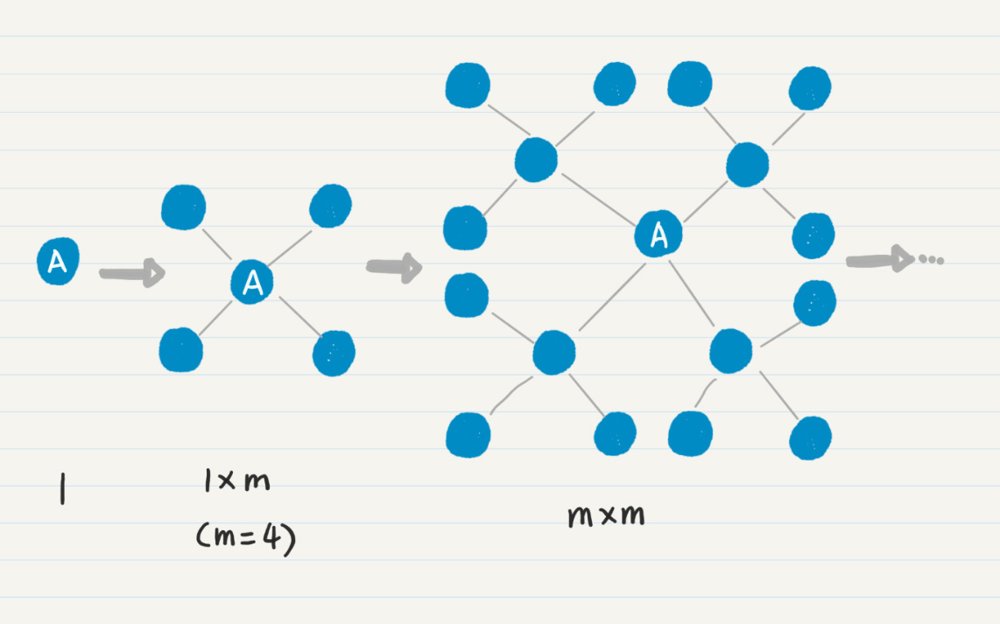
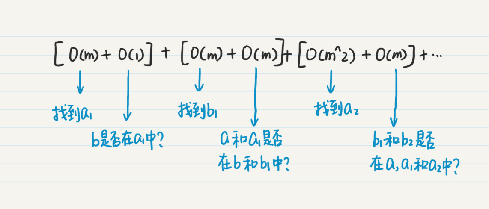

- 01 二进制：不了解计算机的源头，你学什么编程.md.html
- 02 余数：原来取余操作本身就是个哈希函数.md.html
- 03 迭代法：不用编程语言的自带函数，你会如何计算平方根？.md.html
- 04 数学归纳法：如何用数学归纳提升代码的运行效率？.md.html
- 05 递归（上）：泛化数学归纳，如何将复杂问题简单化？.md.html
- 06 递归（下）：分而治之，从归并排序到MapReduce.md.html
- 07 排列：如何让计算机学会“田忌赛马”？.md.html
- 08 组合：如何让计算机安排世界杯的赛程？.md.html
- 09 动态规划（上）：如何实现基于编辑距离的查询推荐？.md.html
- 10 动态规划（下）：如何求得状态转移方程并进行编程实现？.md.html
- 11 树的深度优先搜索（上）：如何才能高效率地查字典？.md.html
- 12 树的深度优先搜索（下）：如何才能高效率地查字典？.md.html
- 13 树的广度优先搜索（上）：人际关系的六度理论是真的吗？.md.html
- 14 树的广度优先搜索（下）：为什么双向广度优先搜索的效率更高？.md.html
- 15 从树到图：如何让计算机学会看地图？.md.html
- 16 时间和空间复杂度（上）：优化性能是否只是“纸上谈兵”？.md.html
- 17 时间和空间复杂度（下）：如何使用六个法则进行复杂度分析？.md.html
- 18 总结课：数据结构、编程语句和基础算法体现了哪些数学思想？.md.html
- 19 概率和统计：编程为什么需要概率和统计？.md.html
- 20 概率基础（上）：一篇文章帮你理解随机变量、概率分布和期望值.md.html
- 21 概率基础（下）：联合概率、条件概率和贝叶斯法则，这些概率公式究竟能做什么？.md.html
- 22 朴素贝叶斯：如何让计算机学会自动分类？.md.html
- 23 文本分类：如何区分特定类型的新闻？.md.html
- 24 语言模型：如何使用链式法则和马尔科夫假设简化概率模型？.md.html
- 25 马尔科夫模型：从PageRank到语音识别，背后是什么模型在支撑？.md.html
- 26 信息熵：如何通过几个问题，测出你对应的武侠人物？.md.html
- 27 决策树：信息增益、增益比率和基尼指数的运用.md.html
- 28 熵、信息增益和卡方：如何寻找关键特征？.md.html
- 29 归一化和标准化：各种特征如何综合才是最合理的？.md.html
- 30 统计意义（上）：如何通过显著性检验，判断你的A_B测试结果是不是巧合？.md.html
- 31 统计意义（下）：如何通过显著性检验，判断你的A_B测试结果是不是巧合？.md.html
- 32 概率统计篇答疑和总结：为什么会有欠拟合和过拟合？.md.html
- 33 线性代数：线性代数到底都讲了些什么？.md.html
- 34 向量空间模型：如何让计算机理解现实事物之间的关系？.md.html
- 35 文本检索：如何让计算机处理自然语言？.md.html
- 36 文本聚类：如何过滤冗余的新闻？.md.html
- 37 矩阵（上）：如何使用矩阵操作进行PageRank计算？.md.html
- 38 矩阵（下）：如何使用矩阵操作进行协同过滤推荐？.md.html
- 39 线性回归（上）：如何使用高斯消元求解线性方程组？.md.html
- 40 线性回归（中）：如何使用最小二乘法进行直线拟合？.md.html
- 41 线性回归（下）：如何使用最小二乘法进行效果验证？.md.html
- 42 PCA主成分分析（上）：如何利用协方差矩阵来降维？.md.html
- 43 PCA主成分分析（下）：为什么要计算协方差矩阵的特征值和特征向量？.md.html
- 44 奇异值分解：如何挖掘潜在的语义关系？.md.html
- 45 线性代数篇答疑和总结：矩阵乘法的几何意义是什么？.md.html
- 46 缓存系统：如何通过哈希表和队列实现高效访问？.md.html
- 47 搜索引擎（上）：如何通过倒排索引和向量空间模型，打造一个简单的搜索引擎？.md.html
- 48 搜索引擎（下）：如何通过查询的分类，让电商平台的搜索结果更相关？.md.html
- 49 推荐系统（上）：如何实现基于相似度的协同过滤？.md.html
- 50 推荐系统（下）：如何通过SVD分析用户和物品的矩阵？.md.html
- 51 综合应用篇答疑和总结：如何进行个性化用户画像的设计？.md.html
- 导读：程序员应该怎么学数学？.md.html
- 开篇词 作为程序员，为什么你应该学好数学？.md.html
- 数学专栏课外加餐（一） 我们为什么需要反码和补码？.md.html
- 数学专栏课外加餐（三）：程序员需要读哪些数学书？.md.html
- 数学专栏课外加餐（二） 位操作的三个应用实例.md.html
- 结束语 从数学到编程，本身就是一个很长的链条.md.html
- 捐赠
17 时间和空间复杂度（下）：如何使用六个法则进行复杂度分析？
你好，我是黄申，今天我们接着聊复杂度分析的实战。
上一讲，我从数学的角度出发，结合自身经验给你总结了几个分析复杂度的法则。但是在实际工作中我们会碰到很多复杂的问题，这个时候，正确地运用这些法则并不是件容易的事。今天，我就结合几个案例，教你一步步使用这几个法则。
案例分析一：广度优先搜索
在有关图遍历的专栏中，我介绍了单向广度优先和双向广度优先搜索。当时我提到了通常情况下，双向广度优先搜索性能更好。那么，我们应该如何从理论上分析，谁的效率更高呢？
首先我们来看单向广度优先搜索。我们先快速回顾一下搜索的主要步骤。
第一步，判断边界条件，时间和空间复杂度都是O(1)。
第二步，生成空的队列。常量级的CPU和内存操作，根据主次分明法则，时间和空间复杂度都是O(1)。
第三步，把搜索的起始结点放入队列queue和已访问结点的哈希集合visited，类似上一步，常量级操作，时间和空间复杂度都是O(1)。
第四步，也是最核心的步骤，包括了while和for的两个循环嵌套。
我们首先看时间复杂度。根据四则运算法则，时间复杂度是两个循环的次数相乘。对于嵌套在内的for循环，这个次数很好理解，和每个结点的直接连接点有关。如果要计算平均复杂度，我们就取直接连接点的平均数量，假设它为m。
现在的难题在于，第一个while循环次数是多少呢？我们考虑一下齐头并进法则，是否存在其他的因素来决定计算的次数？第一次的while循环，只有起始点一个。从起始点出发，会找到m个一度连接点，把它们放入队列，那么第二次while循环就是m次，依次类推，到第i次，那么总次数就是(m+m*m+m*m*m+…+m^i)。这里我们假设被重复访问的结点不多，可以忽略不计。
在循环内部，所有操作都是常量级的，包括通过哈希集合判断是否找到终止结点。所以时间复杂度就是O(m+m*m+m*m*m+…+m^i)，取最高数量级m^i，最后可以简化成O(m^i)，其中i是从起始点开始所走的边数。这就是除了m之外的第二个关键因素。
如果你觉得还是不太好理解，可以使用一图千言法则，我画了一张图来帮助你理解。

我们再来看这个步骤的空间复杂度。通过代码你应该可以看出来，只有queue和visited变量新增了数据，而图的结点本身没有发生改变。所以，考虑内存空间使用时，只需要考虑queue和visited的使用情况。两者都是在新发现一个结点时进行操作，因此新增的内存空间和被访问过的结点数成正比，同样为O(m^i)。
最后，这四步是平行的，所以我们只需要把这几个时间复杂度相加就行了。很明显前三步都是常量，只有最后一步是决定性因素，因此时间和空间复杂度都是O(m^i)。
我这里没有考虑图的生成，因为这步在单向搜索和双向搜索中是一样的，而且在实际项目中，我们也不会采用随机生成的方式。
接下来，我们来看看双向广度优先搜索。我刚才已经把单向的搜索过程分析得很透彻了，所以双向的复杂度你应该很容易就能得出来。但是，有两处关键点需要你注意。
第一个关键点是双向搜索所要走的边数。如果单向需要走i条边，那么双向是i/2。因此时间和空间复杂度都会变为O(2*m^(i/2)，简写为O(m^(i/2))。这里i/2中的2不能省去，因为它是在指数上，改变了数量级。仅从这点来看，双向比单向的复杂度低。
第二个关键点是双向搜索过程中，判断是否找到通路的方式。单向搜索只需要判断一个点是否存在集合中，每次只有O(1)的复杂度。而双向搜索需要比较两个集合是否存在交集，复杂度肯定要高于O(1)。
最常规的实现方法是，循环遍历其中一个集合A，看看A中的每个元素是不是出现在集合B中。假设两个集合中元素的数量都为n，那么循环n次，那么时间复杂度就为O(n)。基于这些，我们重新写一下双向广度优先搜索的时间复杂度。
假设我们分别从\(a\)点和\(b\)点出发。
- 从\(a\)点出发，找到m个一度连接点\(a\_{1}\)，时间复杂度O(m)，然后查看\(b\)是否在这m个结点中，时间复杂度是O(1)。
- 然后从\(b\)点出发，找到m个一度连接点\(b\_{1}\)，时间复杂度O(m)，然后查看\(a\)和\(a\_{1}\)是不是在\(b\)和\(b\_{1}\)中，时间复杂度是O(m+1)，简写为O(m)。
- 从\(a\)点继续推进到第二度的结点\(a\_{2}\)，这个时候\(a\)、\(a\_{1}\)和\(a\_{2}\)的并集的数量已经有1+m+m^2，而\(b\)和\(b\_{1}\)的并集数量只有1+m。
因此，针对\(b\)和\(b\_{1}\)的集合进行循环更高效一些，时间复杂度是O(m)。

逐步递推下去，我们可以得到下面这个式子：
O(m) + O(1) + O(m) + O(m) + O(m^2) + O(m) ... + O(m^(i/2)) + O(m^(i/2)) = O(1) + O(4m) + O(4m^2) + ... + O(3m^(i/2))
虽然这个式子简化后仍然为O(m^(i/2))，但是我们可以通过这些推导的步骤了解整个算法运行的过程，以及对最终复杂度的影响。
最后比较单向广度搜索的复杂度O(m^i)和双向广度搜索的复杂度O(m^(i/2))，双向的方法更优。
不过，上面讨论的内容，都是假设每个点的直接相连点数量都很均匀，都是m个。如果数据不是均匀的呢？你可以利用排列组合的思想，想想看各种不同的情况。我想到了三种情况。
第一种情况，我用a=b来表示，也就是前面讨论的，不管从a和b哪个点出发，每个点的直接连接数量都是相当的。这个时候的最好、最坏和平均复杂度非常接近。
第二种情况，我用a来表示，表示从a点出发，每个点的直接连接数量远远小于从b点出发的那些。例如，从a点出发，2度之内所有的点都只有1、2个直接相连点，而从b点出发，2度之内的大部分点都有100个以上的直接相连点。
第三种情况和第二种类似，我用a>b表示，表示从b点出发，每个点的直接连接数量远远小于从a点出发的那些。
对于第二和第三种情况，双向搜索的最坏、最好和平均的复杂度是多少？还会是双向的方法更优吗？仔细分析一下各种情况，你就能回答第14讲的思考题了。
案例分析二：全文搜索
刚才的分析中，我们已经使用了6个复杂度分析法则中的5个，不过还没涉及最后一个时空互换。这个原则有自己的特殊性，我们需要通过牺牲空间复杂度来降低时间复杂度，或者反其道行之。
因此，在实际运用中，我们更多的是使用这个原则来指导和优化系统的设计。今天，我用搜索引擎的例子，来给你讲讲如何做到这一点。
搜索引擎你一定用得很多了，它最基本的也最重要的功能，就是根据你输入的关键词，查找指定的数据对象。这里，我以文本搜索为例。要查找某个关键词是不是出现在一篇文章里，最基本的处理方式有两种。
第一，把全文作为一个很长的字符串，把用户输入的关键词作为一个子串，那这个搜索问题就变成了子串匹配的问题。
假设字符串平均长度为n个字符，关键词平均长度为m个字符，使用最简单的暴力法，就是把代表全文的字符串的每个字符，和关键词字符串的每个字符两两相比，那么时间复杂度就是O(n*m)。
第二，对全文进行分词，把全文切分成一个个有意义的词，那么这个搜索问题就变成了把输入关键词和这些切分后的词进行匹配的问题。
拉丁文分词比较简单，基本上就是根据各种分隔符来切分。而中文分词涉及很多算法，不过这不是我们讨论的重点，我们假设无论何种语言、何种分词方法，时间复杂度都是O(n)，其中n为文章的长度。而在词的集合中查找输入的关键词，时间复杂度是O(m)，m为词集合中元素的数量。
我们也可以先对词的集合排序，时间复杂度是O(m*logm)，然后使用二分查找，时间复杂度都只有O(logm)。如果文章很少改变，那么全文的分词和词的排序，基本上都属于一次性的开销，对于关键词查询来说，每次的时间复杂度都只有O(logm)。
无论使用上述哪种方法，看上去时间复杂度都不算太高，是吧？可是，别忘了，我们可是在海量的文章中查找信息，还需要考虑文章数量这个因素。假设文章数量是k，那么时间复杂度就变为O(k*n)，或者O(k*logm)，数量级一下子就增加了。
为了降低搜索引擎在查询时候的时间复杂度，我们要引入倒排索引（或逆向索引），这就是典型的牺牲空间来换取时间。如果你对倒排索引的概念不熟悉，我打个比方给你解释一下。
假设你是一个热爱读书的人，当你进入图书馆或书店的时候，怎样快速找到自己喜爱的书籍？没错，就是看书架上的标签。如果看到一个架子上标着“极客时间 - 数学专栏”，那么恭喜你，离程序员的数学书就不远了。而倒排索引做的就是“贴标签”的事情。
为了实现倒排索引，对于每篇文章我们都要先进行分词，然后将分好的词作为该篇的标签。让我们看看下面三篇样例文章和对应的分词，也就是标签。其中，分词之后，我也做了一些标准化的处理，例如全部转成小写、去掉时态等。
上面这个表格看上去并没有什么特别。好，体现“倒排”的时刻来了。我们转换一下，不再从文章的角度出发，而是从标签的角度出发来看问题。也就是说，从每个标签，我们能找到哪些文章？通过这样的思考，我们可以得到下面这张表。

你看看，有了这张表格，想知道查找某个关键词在哪些文章中出现，是不是很容易呢？整个过程就像在哈希表中查找一样，时间复杂度只有O(1)了。当然，我们所要付出的成本就是倒排索引这张表。
假设有n个不同的单词，而每个单词所对应的文章平均数为m的话，那么这种索引的空间复杂度就是O(n*m)。好在n和m通常不会太大，对内存和磁盘的消耗都是可以接受的。
小结
这一讲，我分析了两个复杂度的案例，并在其中穿插了6个法则的运用和讲解。随着项目经验的累积，你会发现复杂度分析是个很有趣，也很有成就感的事情。
更重要的是，它可以告诉我们哪些方法是可行的，哪些是不可行的，避免不必要的资源浪费。这里，资源浪费可能是硬件资源的浪费，也有可能是开发资源的浪费。这些法则中的数学思想并不高深，却可以帮我们有效地分析复杂度，运筹帷幄于帐中，决胜于千里之外。
思考题
在你日常的工作中，有没有经历过性能分析相关的项目？如果有，你都使用了哪些方法来分析问题的症结？
欢迎在留言区交作业，并写下你今天的学习笔记。你可以点击“请朋友读”，把今天的内容分享给你的好友，和他一起精进。
© 2019 - 2023 Liangliang Lee. Powered by gin and hexo-theme-book.